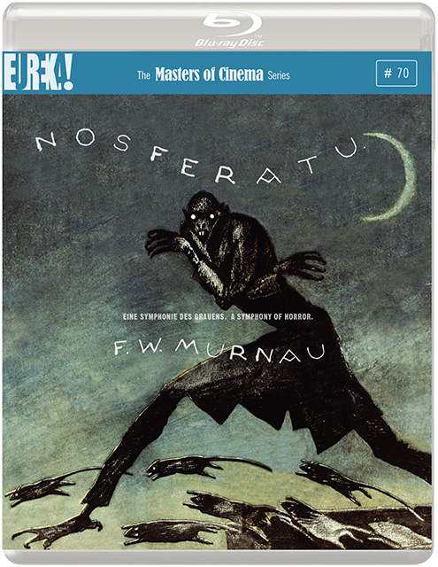

59:59 · 13 OPERE
Siegfried Kracauer, Gli impiegati.
Il filo del discorso
Il contributo presenta Gli impiegati di Siegfried Kracauer come un’indagine capace di interrogare anche il lavoro e la cultura contemporanei. Dopo aver ricordato l’architetto, il giornalista e il rapporto con Adorno, Dr Divago descrive la nascita del ceto impiegatizio nella Germania di Weimar. Al centro colloca lo scarto fra le condizioni materiali dei dipendenti e l’identificazione con i modelli sociali dominanti: la distanza dagli operai, la paura di invecchiare e l’obbligo di apparire sempre adatti al mercato. Il metodo di Kracauer, costruito attraverso osservazioni, colloqui e documenti, introduce poi una discussione sul rapporto fra realtà, interpretazione e accumulo di opinioni. Il relatore estende questa lettura al cinema, confrontando i motivi studiati in Da Caligari a Hitler con Pretty Woman, gli zombie e The Purge; sono sue interpretazioni dell’immaginario e non diagnosi dimostrate del pubblico. Il Terzo Reich dei sogni offre un altro esempio dell’intreccio fra esperienza sociale e vita interiore. Le letture degli Impiegati mostrano la disciplina della dattilografia, la razionalizzazione del lavoro, l’adattamento e il rifiuto, con Bartleby come termine di paragone. Dr Divago contrappone quindi la ricerca di un’identità autonoma all’approvazione esterna e richiama il carteggio di Abelardo ed Eloisa, il Faust e Fiorirà l’aspidistra. Il finale torna all’intrattenimento che distrae dalla comprensione delle condizioni di vita e accosta l’immagine della luce che abbaglia alla Dialettica dell’illuminismo. Le generalizzazioni politiche e le polemiche personali restano attribuite al relatore; la scheda distingue inoltre alcune imprecisioni storiche e bibliografiche dalla tesi del discorso.
I libri nel discorso

Gli impiegati (Die Angestellten)
Copertina: Meltemi, 2020, 160 pagine, ISBN 9788855191067. Traduzione di Anna Solmi, saggio di Maurizio Guerri e nota di Luciano Gallino. Die Angestellten uscì in volume nel 1930; edizione moderna non attribuita al video.
Copertina autentica Meltemi completa, vista: fondo giallo, impiegato in arancio, Siegfried Kracauer e Gli impiegati, nomi Guerri e Gallino. Non confusa con Da Caligari a Hitler, non citato esplicitamente in questo contributo.
Die Angestellten e Gli impiegati espliciti; Anna Solmi, Gallino ed edizione Einaudi ricordati.
Passaggio 0:43 ↗ · Fonti e libro ↗Soziologie als Wissenschaft. Eine erkenntnistheoretische Untersuchung
Copertina della raccolta Werke, volume 1: COPERTINA DI RACCOLTA: Werke, Band 1, Suhrkamp, 2006, 398 pagine, ISBN 9783518583319, a cura di Inka Mülder-Bach con Mirjam Wenzel. Contiene Soziologie als Wissenschaft (1922), Der Detektiv-Roman e Die Angestellten; non è una copertina autonoma del solo saggio.
Immagine autentica controllata integralmente; questa edizione o presentazione non è attribuita al filmato.
Soziologie als Wissenschaft e anno 1922 espliciti.
Passaggio 4:41 ↗ · Fonti e libro ↗La massa come ornamento (Das Ornament der Masse)
Copertina: Cue Press, 2023, 222 pagine, ISBN 9788855102902, contributi di Emiliano Morreale; traduzione di Maria Giovanna Amirante Pappalardo, Claudio Groff, Francesco Maione e Serena Parisi. Raccolta omonima pubblicata originariamente nel 1963, comprendente saggi degli anni Venti; il saggio eponimo risale al 1927.
Immagine autentica controllata integralmente; questa edizione o presentazione non è attribuita al filmato.
La massa come ornamento e Das Ornament der Masse espliciti; altri richiami a 1584 e 2960.
Passaggio 13:17 ↗ · Fonti e libro ↗Da Caligari a Hitler. Una storia psicologica del cinema tedesco
Copertina: Lindau, edizione italiana curata da Leonardo Quaresima, ISBN 9788871807010; copertina dell’edizione di catalogo 2007, con appendice di recensioni. Originale From Caligari to Hitler: A Psychological History of the German Film, 1947.
Immagine autentica controllata integralmente; questa edizione o presentazione non è attribuita al filmato.
Da Caligari a Hitler e sottotitolo storia psicologica del cinema tedesco, Princeton e 1947 espliciti.
Passaggio 13:42 ↗ · Fonti e libro ↗
Nosferatu. Eine Symphonie des Grauens
Identificazione probabile
Copertina Blu-ray del film: CONFEZIONE BLU-RAY: Eureka, The Masters of Cinema Series n. 70, edizione del 18 novembre 2013, SKU EKA70115, del film tedesco del 1922 diretto da F. W. Murnau. Non è una copertina libraria né una locandina del rifacimento.
Immagine autentica controllata integralmente; questa edizione o presentazione non è attribuita al filmato.
Nel discorso sul cinema tedesco anni Venti, titolo ASR contratto in sferato accanto ai vampiri; probabile Nosferatu di Murnau, non un remake.
Passaggio 15:20 ↗ · Fonti e libro ↗Pretty Woman
Immagine promozionale del film: IMMAGINE PROMOZIONALE del film Pretty Woman, 1990, regia di Garry Marshall, con Richard Gere e Julia Roberts, pubblicata da Disney+. Non è una copertina di libro.
Immagine autentica controllata integralmente; questa edizione o presentazione non è attribuita al filmato.
Pretty Woman esplicito come esempio del topos del ricco che incontra una donna di condizione diversa.
Passaggio 15:38 ↗ · Fonti e libro ↗The Purge (La notte del giudizio)
Identificazione probabile
Locandina del film: LOCANDINA DIGITALE ufficiale Universal del film The Purge, 2013, scritto e diretto da James DeMonaco, con Ethan Hawke e Lena Headey. Non è una copertina libraria o una confezione della raccolta dei sequel.
Immagine autentica controllata integralmente; questa edizione o presentazione non è attribuita al filmato.
The Purge esplicito; notte annua di violenza, descrizione generale senza anno o capitolo della serie. Riferimento al primo film probabile; il relatore dichiara di non averlo visto.
Passaggio 17:04 ↗ · Fonti e libro ↗Il Terzo Reich dei sogni (Das Dritte Reich des Traums)
Copertina: Meltemi, 2020, 142 pagine, ISBN 9788855191487, traduzione di Ingrid Harbeck secondo la scheda editoriale; prefazione di Reinhart Koselleck, postfazione di Bruno Bettelheim. Prima edizione tedesca 1966.
Immagine autentica controllata integralmente; questa edizione o presentazione non è attribuita al filmato.
Il Terzo Reich dei sogni esplicito; sogni e paura sotto il nazismo. Titolo univoco riscontrato; autrice giornalista, non psichiatra.
Passaggio 18:32 ↗ · Fonti e libro ↗Lettere di Abelardo ed Eloisa (The Letters of Abelard and Heloise)
Copertina: Penguin Classics, edizione ebook del 27 novembre 2003, 384 pagine, ISBN 9780141915951. Traduzione Betty Radice, introduzione Michael Clanchy. Raccolta del carteggio medievale; nessuna singola lettera o edizione è attribuita al video.
Immagine autentica controllata integralmente; questa edizione o presentazione non è attribuita al filmato.
Lettere di Abelardo a Eloisa esplicite; corpus epistolare riconoscibile, singola lettera e parafrasi non localizzate.
Passaggio 42:13 ↗ · Fonti e libro ↗
Faust
Copertina: BUR / Rizzoli · 2005
Immagine autentica dell’opera, controllata visivamente; l’edizione di riferimento non è attribuita al filmato.
Goethe e Faust espliciti nel confronto sulla vendita dell’anima e la modernità mercantile.
Passaggio 44:45 ↗ · Fonti e libro ↗
Bartleby lo scrivano
Copertina della raccolta: Bompiani · Bartleby lo scrivano e altri racconti · 2018
Copertina della raccolta Bompiani che contiene Bartleby lo scrivano. Non è presentata come copertina di un’edizione autonoma del racconto né come l’esemplare citato nel video.
Bartleby esplicito nel parallelo con l’impiegato di banca che si alza e se ne va; precedente richiamo a 2934.
Passaggio 50:51 ↗ · Fonti e libro ↗
Fiorirà l’aspidistra
Copertina: Santelli · Classici · copertina ufficiale dell’edizione di riferimento
Orwell e Fiorirà l’aspidistra espliciti a proposito di cultura, decoro e modello borghese.
Passaggio 53:37 ↗ · Fonti e libro ↗
Dialettica dell’illuminismo
Copertina: Einaudi, Piccola Biblioteca Einaudi, 2010
Edizione illustrativa dell'opera, con traduzione di Renato Solmi e introduzione di Carlo Galli; non identificata nel video.
Dialettica dell’illuminismo, Adorno e Horkheimer espliciti; commentata l’immagine inaugurale della luce e della sventura.
Passaggio 58:18 ↗ · Fonti e libro ↗Minutaggi ricavati da testi automatici, da riascoltare. Le identificazioni probabili sono segnalate accanto ai libri.